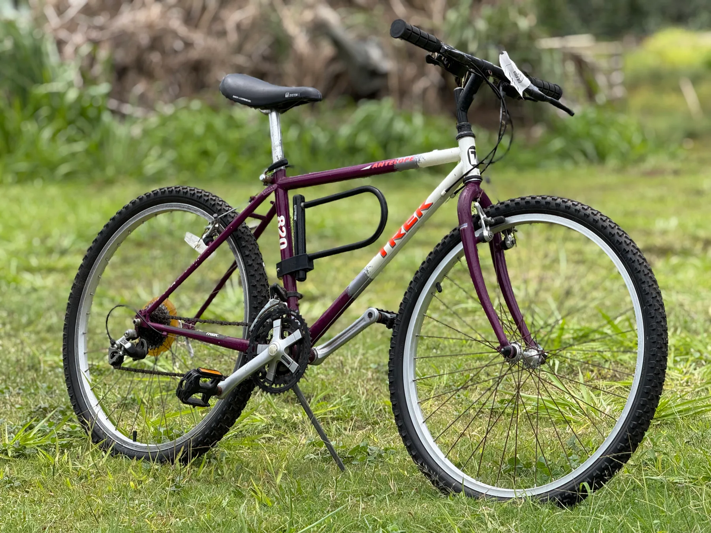

Repairs & tune-ups
From a flat tire to a full overhaul, get your bike back to riding smoothly.
Your little Kauaʻi bike shop
Bicycle care with a personal touch. Repairs, custom builds and a second life for the bikes you love.
Līhuʻe, Kauaʻi · Owner-operated by Shaydon

What we do
Every bike is handled directly by Shaydon. Start with a conversation about what you ride and what it needs.
Talk to ShaydonFrom a flat tire to a full overhaul, get your bike back to riding smoothly.
Bring an older frame back to life, or build a ride around the way you roll.
Have a bike from the 80s or 90s? Ask about selling it, or finding a hard-to-source part.
Shipping to and from the outer islands can be arranged. Shipping fees apply.
Service rates
Start with a free consultation and estimate. Parts are additional where noted; confirm your final scope and price with Shaydon.
$100 + parts
A refresh for a bike that sees regular use.
$200 + parts
A more thorough service from bearings to drivetrain.
Confirm your quote and parts costs before work begins. A free tire consultation is also available.
Frame-up work can include stripping, degreasing, thread cleaning, polishing and rebuilding. Café cruisers, commuters, townies, single-speed and fixed-gear conversions are quoted individually.
Discuss a custom build ↗Getting started
Call, text or email Shaydon with your repair or build idea.
Talk through the work and an estimate before getting started.
Bring your bike to the Līhuʻe shop or arrange interisland shipping.
Shaydon personally takes care of your repair, restoration or build.
You’ll hear from Shaydon when your bike is ready.
One person. A limited number of projects each month. Reach out early to discuss availability.
Mountain bikes · Cruisers · Road bikes · BMX · Hybrids
From the shop
Rice Street Retros is the shop’s vintage passion project. Classic bikes, careful restorations and hard-to-find parts.
A look at the bikes, details and riders around the shop.
Start your build
Meet the owner
Shaydon W. K. Moises started the shop in 2024 in a small bike shack in Līhuʻe. A love of collecting and restoring vintage frames grew into a business built around reliable repairs and custom builds.
Every project goes through his hands. Whether you’re bringing in an everyday ride or an older bike with a story, the aim is to keep it rolling and help you enjoy more time on two wheels.
Tell Shaydon about your bike ↗From the community
“Gave my purple bike a whole new life”
Darcie
“Its the details for me”
Anonymous
“Had a hard time getting this seat, thank you Shaydon!”
Anonymous
Walk-ins are welcome. Appointments can help shorten your wait during busy weeks. Reach out to Shaydon before visiting to confirm availability.
Usually 2–3 days, depending on parts and workload. Same-day service may be possible for small repairs. Confirm the current turnaround with Shaydon.
Cash, credit card and Venmo.
Not at this time. For e-bike questions, contact Kauaʻi Cycle at www.kauaicycle.com.
Yes. Labor still applies, and compatibility is checked before installation.
Brake and driveline adjustments, wheel truing, bearing adjustments, bolt checks, a wipe-down, lubrication, tire inspection and inflation, and a safety check. See the service list for details.
There is a 14-day return window if something feels off after a repair. Contact Shaydon to discuss the issue and confirm what is covered.
The shop recommends every 6–12 months for casual riders and every 3–6 months for frequent riders. If something feels or sounds off, reach out sooner.
Yes. Shaydon can help source parts, build from a frame or upgrade your current bike. Pricing depends on components and time.
Your bike. Accessories such as bags, child seats and lights can stay on unless you prefer to remove them.
Refurbished bikes may be available. Call to ask about current stock.
Tube and tire installs are usually quick; usually around 10–15 minutes, depending on the queue. Check availability first.
Vintage bikes are welcome. Some need more labor or harder-to-find parts; Shaydon can evaluate the bike and explain your options.
A free inspection and estimate are available before work starts. Contact Shaydon with details about your bike.
Pickup and delivery are available for an additional fee depending on location. Ask Shaydon about availability and a quote.
Let’s talk bikes
Tell Shaydon about your bike, the work you have in mind and any questions.
808-639-00142437D Hulemalu RoadConfirm visit arrangements before heading to the shop.